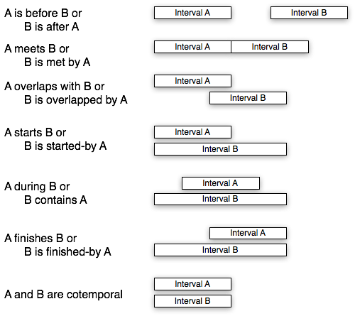

Introduction
This tutorial provides an introduction to the temporal features that are available in AllegroGraph. We cover temporal points, temporal intervals, and how to locate each of these on a one-dimensional timeline. We provide a number of example queries demonstrating the supported temporal relations involving points, intervals and datetimes.
First, let's create a triple store and register namespaces for the tutorial. We will also use enable-!-reader to make it easier to type URIs. For more details on getting up and running with AllegroGraph, see the Quick Start. Note that you will need to have the AllegroGraph server running. See if installation guide for more details.
(enable-!-reader)
(enable-print-decoded t)
(register-namespace "ex" "http://example.org/")
(register-namespace "t" "http://franz.com/ns/allegrograph/3.0/temporal/")
(create-triple-store "temporal-tutorial.db")
Dates, times and datetimes
AllegroGraph supports strings in ISO 8601 format and provides functions for converting to and from encoded :date-time UPIs for efficient storage.
Converts an ISO8601 date string to a :date-time UPI. Values not included in the string are set to zero with the exception of the timezone which defaults to whatever is current for the application.
Returns nil if the string cannot be converted.
Converts a :date-time upi to an ISO8601 date string.
The string representation uses the current timezone. For examples,
;; in Seattle
> (upi-to-date-string (date-string-to-upi "2009-01-01T04:30-08:00"))
"2009-01-01T04:30:00-08:00"
;; in New York
> (upi-to-date-string (date-string-to-upi "2009-01-01T04:30-08:00"))
"2008-12-31T19:00:00-05:00" Example: Convert from an ISO8601 date string to a :date-time UPI and back.
> (date-string-to-upi "2008-02-01")
{3410841600}
> (upi-to-date-string *)
"2008-02-01T00:00:00-08:00"
> (date-string-to-upi "2008-02-01T00:00:00-08:00")
{3410841600} Points and Intervals
AllegroGraph supports Allen's temporal points and intervals. Points are an abstraction used to label moments such as "the moment John arrived". Points exist independently of time, but can be positioned on a timeline if a time is known. Intervals are another abstraction used to label a time period such as "Easter weekend, 2008"; these also exist independently of time but can be positioned on a timeline.
Temporal Properties
AllegroGraph supports the following temporal properties:
- http://franz.com/ns/allegrograph/3.0/temporal/time
- http://franz.com/ns/allegrograph/3.0/temporal/starttime
- http://franz.com/ns/allegrograph/3.0/temporal/endtime
- http://franz.com/ns/allegrograph/3.0/temporal/startpoint
- http://franz.com/ns/allegrograph/3.0/temporal/endpoint
A Point is positioned on the timeline using the above time properties. Anything having the time property is a Point.
An Interval can be defined by specifying its startpoint and endpoint.
Intervals can be positioned on the timeline by positioning their start and end points using the time property, or they can be positioned using the starttime and endtime properties. Anything having a startpoint, endpoint, starttime, or endtime property is an Interval.
In the following sections we provide examples for using these properties.
Situating Points on the Timeline
Use the t:time property to position a point on the timeline. The value must be a :date-time UPI.
;; situate 8 points on the timeline, each 1 day apart
(add-triple !ex:pt1 !t:time (date-string-to-upi "2008-02-01"))
(add-triple !ex:pt2 !t:time (date-string-to-upi "2008-02-02"))
(add-triple !ex:pt3 !t:time (date-string-to-upi "2008-02-03"))
(add-triple !ex:pt4 !t:time (date-string-to-upi "2008-02-04"))
(add-triple !ex:pt5 !t:time (date-string-to-upi "2008-02-05"))
(add-triple !ex:pt6 !t:time (date-string-to-upi "2008-02-06"))
(add-triple !ex:pt7 !t:time (date-string-to-upi "2008-02-07"))
(add-triple !ex:pt8 !t:time (date-string-to-upi "2008-02-08")) Defining Intervals using two Points
Use the t:startpoint and t:endpoint properties to associate points with an interval's start and end points.
Here we define a number of intervals in terms of the 8 points that were defined in the section above.
;; add all intervals starting at pt1
(add-triple !ex:i12 !t:startpoint !ex:pt1)
(add-triple !ex:i12 !t:endpoint !ex:pt2)
(add-triple !ex:i13 !t:startpoint !ex:pt1)
(add-triple !ex:i13 !t:endpoint !ex:pt3)
(add-triple !ex:i14 !t:startpoint !ex:pt1)
(add-triple !ex:i14 !t:endpoint !ex:pt4)
(add-triple !ex:i15 !t:startpoint !ex:pt1)
(add-triple !ex:i15 !t:endpoint !ex:pt5)
(add-triple !ex:i16 !t:startpoint !ex:pt1)
(add-triple !ex:i16 !t:endpoint !ex:pt6)
(add-triple !ex:i17 !t:startpoint !ex:pt1)
(add-triple !ex:i17 !t:endpoint !ex:pt7)
(add-triple !ex:i18 !t:startpoint !ex:pt1)
(add-triple !ex:i18 !t:endpoint !ex:pt8)
;; add a few intervals in the middle
(add-triple !ex:i45 !t:startpoint !ex:pt4)
(add-triple !ex:i45 !t:endpoint !ex:pt5)
(add-triple !ex:i36 !t:startpoint !ex:pt3)
(add-triple !ex:i36 !t:endpoint !ex:pt6)
(add-triple !ex:i27 !t:startpoint !ex:pt2)
(add-triple !ex:i27 !t:endpoint !ex:pt7)
;; add all other intervals ending at pt8
(add-triple !ex:i28 !t:startpoint !ex:pt2)
(add-triple !ex:i28 !t:endpoint !ex:pt8)
(add-triple !ex:i38 !t:startpoint !ex:pt3)
(add-triple !ex:i38 !t:endpoint !ex:pt8)
(add-triple !ex:i48 !t:startpoint !ex:pt4)
(add-triple !ex:i48 !t:endpoint !ex:pt8)
(add-triple !ex:i58 !t:startpoint !ex:pt5)
(add-triple !ex:i58 !t:endpoint !ex:pt8)
(add-triple !ex:i68 !t:startpoint !ex:pt6)
(add-triple !ex:i68 !t:endpoint !ex:pt8)
(add-triple !ex:i78 !t:startpoint !ex:pt7)
(add-triple !ex:i78 !t:endpoint !ex:pt8) Defining Intervals using two Times
Because they have startpoints and endpoints that are themselves situated the intervals above are already indirectly situated on a timeline. Below we show how to situate an interval on the timeline directly, using the t:starttime and t:endtime properties.
;; add starttime triples for the above intervals
(dolist (pair (select0-distinct (?i ?upi)
(q ?i !t:startpoint ?pt)
(q ?pt !t:time ?upi)))
(add-triple (first pair) !t:starttime (second pair)))
;; add endtime triples for the above intervals
(dolist (pair (select0-distinct (?i ?upi)
(q ?i !t:endpoint ?pt)
(q ?pt !t:time ?upi)))
(add-triple (first pair) !t:endtime (second pair))) Temporal Queries
Given a triple store containing information about datetimes, points, and intervals, AllegroGraph provides a number of Prolog functors for specifying temporal constraints in select queries. (See the Prolog tutorial for more details on querying AllegroGraph using Prolog).
This documentation uses the usual Prolog argument notation. A + prefix on an argument indicates that is must be supplied (it is input to the predicate), a - prefix indicates the argument is output and must not be supplied, and a ± prefix indicates the argument may be either.
In the examples that follow we will use the triple store that was defined in the preceding sections as the basis for demonstrating a number of temporal queries.
Relations between two Points
There are 3 ways that two points can be related.
?pt1 is before point ?pt2 on the timeline.
Example: select all points that are before ex:pt3.
> (select0 (?pt)
(point-before ?pt !ex:pt3))
(({pt1}) ({pt2}))
t
Example: select all points that ex:pt3 is before.
> (select0 (?pt)
(point-before !ex:pt3 ?pt))
(({pt4}) ({pt5}) ({pt6}) ({pt7}) ({pt8}))
t ?pt1 is simultaneous with point ?pt2 on the timeline.
Example: select all points that are simultaneous with ex:pt3.
> (select0 (?pt)
(point-simultaneous ?pt !ex:pt3))
(({pt3}))
t ?pt1 is after point ?pt2 on the timeline.
Example: select all points that are after ex:pt6.
> (select0 (?pt)
(point-after ?pt !ex:pt6))
(({pt7}) ({pt8}))
t
Example: select all points that ex:pt6 is after.
> (select0 (?pt)
(point-after !ex:pt6 ?pt))
(({pt1}) ({pt2}) ({pt3}) ({pt4}) ({pt5}))
t Relations between Points and Datetimes
There are 3 ways to relate a Point and a Datetime.
?pt is before the datetime ?dt on the timeline.
> (select0 (?pt)
(point-before-datetime ?pt "2008-02-03"))
(({pt1}) ({pt2}))
t
> (select0 (?dt)
(point-before-datetime !ex:pt5 ?upi)
(upi-to-date-string ?upi ?dt))
(("2008-02-06T00:00:00-08:00") ("2008-02-07T00:00:00-08:00") ("2008-02-08T00:00:00-08:00"))
t ?pt is simultaneous with the datetime ?dt on the timeline.
> (select0 (?pt)
(point-datetime ?pt "2008-02-03"))
(({pt3}))
t
> (select0 (?dt)
(point-datetime !ex:pt5 ?upi)
(upi-to-date-string ?upi ?dt))
(("2008-02-05T00:00:00-08:00"))
t
> (select0 (?pt ?upi)
(point-datetime ?pt ?upi))
(({pt1} {3410841600}) ({pt2} {3410928000}) ({pt3} {3411014400}) ({pt4} {3411100800})
({pt5} {3411187200}) ({pt6} {3411273600}) ({pt7} {3411360000}) ({pt8} {3411446400}))
t
> (select0 (?pt ?dt)
(point-datetime ?pt ?upi)
(upi-to-date-string ?upi ?dt))
(({pt1} "2008-02-01T00:00:00-08:00") ({pt2} "2008-02-02T00:00:00-08:00")
({pt3} "2008-02-03T00:00:00-08:00") ({pt4} "2008-02-04T00:00:00-08:00")
({pt5} "2008-02-05T00:00:00-08:00") ({pt6} "2008-02-06T00:00:00-08:00")
({pt7} "2008-02-07T00:00:00-08:00") ({pt8} "2008-02-08T00:00:00-08:00"))
t ?pt is after the datetime ?dt on the timeline.
> (select0 (?pt)
(point-after-datetime ?pt "2008-02-03"))
(({pt4}) ({pt5}) ({pt6}) ({pt7}) ({pt8}))
t
> (select0 (?dt)
(point-after-datetime !ex:pt5 ?upi)
(upi-to-date-string ?upi ?dt))
(("2008-02-01T00:00:00-08:00") ("2008-02-02T00:00:00-08:00") ("2008-02-03T00:00:00-08:00")
("2008-02-04T00:00:00-08:00"))
t Relations between Points and Intervals
There are 5 ways to position a point relative to an interval.
?pt is before the startpoint of interval ?i.
> (select0 (?pt)
(point-before-interval ?pt !ex:i36))
(({pt1}) ({pt2}))
t ?pt is simultaneous with the startpoint of interval ?i.
> (select0 (?i)
(point-starts-interval !ex:pt3 ?i))
(({i36}) ({i38}))
t ?pt is after the startpoint but before the endpoint of interval ?i.
> (select0 (?pt)
(point-during-interval ?pt !ex:i36))
(({pt4}) ({pt5}))
t ?pt is simultaneous with the endpoint of interval ?i.
> (select0 (?i)
(point-ends-interval !ex:pt6 ?i))
(({i16}) ({i36}))
t ?pt is after the endpoint of interval ?i.
> (select0 (?pt)
(point-after-interval ?pt !ex:i36))
(({pt7}) ({pt8}))
t Relations between Intervals and Datetimes
There are 5 ways to relate an Interval to a Datetime.
?i is before the datetime ?dt on the timeline.
> (select0-distinct(?i)
(interval-before-datetime ?i "2008-02-03"))
(({i12}))
t
> (select0-distinct(?dt)
(interval-before-datetime !ex:i36 ?upi)
(upi-to-date-string ?upi ?dt))
(("2008-02-07T00:00:00-08:00") ("2008-02-08T00:00:00-08:00"))
t ?i is simultaneous with the datetime ?dt on the timeline.
> (select0-distinct (?i)
(interval-starttime ?i "2008-02-03"))
(({i36}) ({i38}))
t
> (select0-distinct(?dt)
(interval-starttime !ex:i36 ?upi)
(upi-to-date-string ?upi ?dt))
(("2008-02-03T00:00:00-08:00"))
t ?i is before the datetime ?dt, and the endpoint of ?i is after ?dt on the timeline.
> (select0-distinct (?i)
(interval-contains-datetime ?i "2008-02-03"))
(({i15}) ({i14}) ({i18}) ({i17}) ({i16}) ({i27}) ({i28}))
t
> (select0-distinct (?dt)
(interval-contains-datetime !ex:i36 ?upi)
(upi-to-date-string ?upi ?dt))
(("2008-02-04T00:00:00-08:00") ("2008-02-05T00:00:00-08:00"))
t ?i is simultaneous with the datetime ?dt on the timeline.
> (select0-distinct(?i)
(interval-endtime ?i "2008-02-03"))
(({i13}))
t
> (select0-distinct(?dt)
(interval-endtime !ex:i36 ?upi)
(upi-to-date-string ?upi ?dt))
(("2008-02-06T00:00:00-08:00"))
t ?i is after the datetime ?dt on the timeline.
> (select0-distinct (?i)
(interval-after-datetime ?i "2008-02-03"))
(({i45}) ({i48}) ({i58}) ({i68}) ({i78}))
t
> (select0-distinct (?dt)
(interval-after-datetime !ex:i36 ?upi)
(upi-to-date-string ?upi ?dt))
(("2008-02-01T00:00:00-08:00") ("2008-02-02T00:00:00-08:00"))
t Relations between two Intervals
Finally, there are 13 ways that two intervals can be related on the timeline.

?i1 is before the startpoint of interval ?i2.
Example: select all intervals before ex:i68
> (select0-distinct (?i)
(interval-before ?i !ex:i68))
(({i12}) ({i13}) ({i14}) ({i45}) ({i15}))
t ?i1 is simultaneous with the startpoint of interval ?i2.
Example: select all intervals that meet ex:i68
> (select0-distinct (?i)
(interval-meets ?i !ex:i68))
(({i16}) ({i36}))
t ?i1 is before the startpoint of interval ?i2, and the endpoint of ?i1 is during interval ?i2.
Example: select all intervals that overlap ex:i38
> (select0-distinct (?i)
(interval-overlaps ?i !ex:i38))
(({i15}) ({i14}) ({i17}) ({i16}) ({i27}))
t ?i1 is simultaneous with the startpoint of interval ?i2, and the endpoint of interval ?i1 is during interval ?i2.
> (select0-distinct (?i)
(interval-starts ?i !ex:i16))
(({i12}) ({i15}) ({i14}) ({i13}))
t ?i1 are both during interval ?i2.
> (select0-distinct (?i)
(interval-during ?i !ex:i27))
(({i36}) ({i45}))
t ?i1 is during interval ?i2, and the endpoint of ?i1 is simultaneous with the endpoint of ?i2.
> (select0-distinct (?i)
(interval-finishes ?i !ex:i38))
(({i48}) ({i68}) ({i78}) ({i58}))
t ?i1 is simultaneous with the startpoint of interval ?i2, and the endpoint of ?i1 is simultaneous with the endpoint of ?i2.
> (select0-distinct (?i)
(interval-cotemporal ?i !ex:i36))
(({i36}))
t ?i1 is after the endpoint of interval ?i2.
> (select0-distinct (?i)
(interval-after ?i !ex:i45))
(({i68}) ({i78}))
t ?i1 is simultaneous with the endpoint of interval ?i2.
> (select0-distinct (?i)
(interval-met-by ?i !ex:i14))
(({i45}) ({i48}))
t ?i1 is during interval ?i2, and the endpoint of ?i1 is after the endpoint of ?i2.
> (select0-distinct (?i)
(interval-overlapped-by ?i !ex:i36))
(({i48}) ({i58}))
t ?i1 is simultaneous with the startpoint of interval ?i2, and the endpoint of ?i1 is after the endpoint of ?i2.
> (select0-distinct (?i)
(interval-started-by ?i !ex:i14))
(({i15}) ({i18}) ({i17}) ({i16}))
t ?i2 are both during interval ?i1.
> (select0-distinct (?i)
(interval-contains ?i !ex:i36))
(({i18}) ({i17}) ({i27}) ({i28}))
t ?i1 is before interval ?i2, and the endpoint of ?i1 is simultaneous with the endpoint of ?i2.
> (select0-distinct (?i)
(interval-finished-by ?i !ex:i48))
(({i18}) ({i28}) ({i38}))
t Relations between an Interval and a Datetime Range
The following relations can be viewed as relations between two intervals where the latter interval is specified by two datetimes.
?i satisfies relation (interval-before ?i ?i2) where ?i2 has starttime ?dt1 and endtime ?dt2.
> (select0-distinct(?i)
(interval-before-datetimes ?i "2008-02-03" "2008-02-06"))
(({i12}))
t ?i satisfies relation (interval-meets ?i ?i2) where ?i2 has starttime ?dt1 and endtime ?dt2.
> (select0-distinct(?i)
(interval-meets-datetimes ?i "2008-02-03" "2008-02-06"))
(({i13}))
t ?i satisfies relation (interval-overlaps ?i ?i2) where ?i2 has starttime ?dt1 and endtime ?dt2.
> (select0-distinct(?i)
(interval-overlaps-datetimes ?i "2008-02-03" "2008-02-06"))
(({i15}) ({i14}))
t ?i satisfies relation (interval-starts ?i ?i2) where ?i2 has starttime ?dt1 and endtime ?dt2.
> (select0-distinct(?i)
(interval-starts-datetimes ?i "2008-02-01" "2008-02-06"))
(({i12}) ({i15}) ({i14}) ({i13}))
t ?i satisfies relation (interval-during ?i ?i2) where ?i2 has starttime ?dt1 and endtime ?dt2.
> (select0-distinct(?i)
(interval-during-datetimes ?i "2008-02-03" "2008-02-06"))
(({i45}))
t ?i satisfies relation (interval-finishes ?i ?i2) where ?i2 has starttime ?dt1 and endtime ?dt2.
> (select0-distinct(?i)
(interval-finishes-datetimes ?i "2008-02-03" "2008-02-08"))
(({i48}) ({i68}) ({i78}) ({i58}))
t ?i satisfies relation (interval-cotemporal ?i ?i2) where ?i2 has starttime ?dt1 and endtime ?dt2.
> (select0-distinct(?i)
(interval-cotemporal-datetimes ?i "2008-02-03" "2008-02-08"))
(({i38}))
t ?i satisfies relation (interval-after ?i ?i2) where ?i2 has starttime ?dt1 and endtime ?dt2.
> (select0-distinct(?i)
(interval-after-datetimes ?i "2008-02-03" "2008-02-06"))
(({i78}))
t ?i satisfies relation (interval-met-by ?i ?i2) where ?i2 has starttime ?dt1 and endtime ?dt2.
> (select0-distinct(?i)
(interval-met-by-datetimes ?i "2008-02-03" "2008-02-06"))
(({i68}))
t ?i satisfies relation (interval-overlapped-by ?i ?i2) where ?i2 has starttime ?dt1 and endtime ?dt2.
> (select0-distinct(?i)
(interval-overlapped-by-datetimes ?i "2008-02-03" "2008-02-06"))
(({i48}) ({i58}))
t ?i satisfies relation (interval-started-by ?i ?i2) where ?i2 has starttime ?dt1 and endtime ?dt2.
> (select0-distinct(?i)
(interval-started-by-datetimes ?i "2008-02-01" "2008-02-06"))
(({i18}) ({i17}))
t ?i satisfies relation (interval-contains ?i ?i2) where ?i2 has starttime ?dt1 and endtime ?dt2.
> (select0-distinct(?i)
(interval-contains-datetimes ?i "2008-02-03" "2008-02-06"))
(({i18}) ({i17}) ({i27}) ({i28}))
t ?i satisfies relation (interval-finished-by ?i ?i2) where ?i2 has starttime ?dt1 and endtime ?dt2.
> (select0-distinct(?i)
(interval-finished-by-datetimes ?i "2008-02-03" "2008-02-08"))
(({i18}) ({i28}))
t Relations between Datetimes specified by Property and Subject
The following relations can be used to efficiently compare two datetimes. Datetimes are specified as the object corresponding to a property ?p and subject ?s, or they can specified as an explicit value.
?s1 and ?s2 can each be a point or an interval. The properties ?p1 and ?p2 can be !t:time (if its subject is a point), or one of !t:starttime or !t:endtime (if its subject is an interval). This functor requires the datetime ?dt1 corresponding to triple (?s1 ?p1 ?dt1) to be simultaneous with the datetime ?dt2 corresponding to triple (?s2 ?p2 ?dt2).
> (select0-distinct(?pt)
(datetime-simultaneous !t:time ?pt !t:time !ex:pt4))
(({pt4}))
t
> (select0-distinct(?i)
(datetime-simultaneous !t:endtime ?i !t:starttime !ex:i68))
(({i16}) ({i36}))
t ?s can be a point or an interval. The property ?p can be !t:time (if its subject is a point), or one of !t:starttime or !t:endtime (if its subject is an interval). This functor requires the datetime ?dtps corresponding to triple (?s ?p ?dtps) to be simultaneous with the datetime ?dt.
> (select0-distinct(?pt)
(datetime-simultaneous-value !t:time ?pt "2008-02-04"))
(({pt4}))
t
> (select0-distinct(?i)
(datetime-simultaneous-value !t:starttime ?i "2008-02-04"))
(({i45}) ({i48}))
t
> (select0-distinct(?i)
(datetime-simultaneous-value !t:endtime ?i "2008-02-04"))
(({i14}))
t ?s1 and ?s2 can each be a point or an interval. The properties ?p1 and ?p2 can be !t:time (if its subject is a point), or one of !t:starttime or !t:endtime (if its subject is an interval). This functor requires the datetime ?dt1 corresponding to triple (?s1 ?p1 ?dt1) to be before the datetime ?dt2 corresponding to triple (?s2 ?p2 ?dt2).
> (select0-distinct(?pt)
(datetime-before !t:time ?pt !t:time !ex:pt3))
(({pt1}) ({pt2}))
t
> (select0-distinct(?i)
(datetime-before !t:starttime ?i !t:starttime !ex:i36))
(({i12}) ({i15}) ({i14}) ({i18}) ({i17}) ({i16}) ({i13}) ({i27})
({i28}))
t
> (select0-distinct (?i1)
(datetime-before !t:starttime ?i !t:endtime !ex:i36))
nil
t
> (select0-distinct (?i)
(datetime-before !t:starttime ?i !t:endtime !ex:i36))
(({i12}) ({i15}) ({i14}) ({i18}) ({i17}) ({i16}) ({i13}) ({i27})
({i28}) ({i36}) ...)
t ?s can be a point or an interval. The property ?p can be !t:time (if its subject is a point), or one of !t:starttime or !t:endtime (if its subject is an interval). This functor requires the datetime ?dtps corresponding to triple (?s ?p ?dtps) to be before the datetime ?dt.
> (select0-distinct(?pt)
(datetime-before-value !t:time ?pt "2008-02-06"))
(({pt1}) ({pt2}) ({pt3}) ({pt4}) ({pt5}))
t
> (select0-distinct(?dt)
(datetime-before-value !t:time !ex:pt3 ?upi)
(upi-to-date-string ?upi ?dt))
(("2008-02-04T00:00:00-08:00") ("2008-02-05T00:00:00-08:00") ("2008-02-06T00:00:00-08:00")
("2008-02-07T00:00:00-08:00") ("2008-02-08T00:00:00-08:00"))
t
> (select0-distinct(?i)
(datetime-before-value !t:starttime ?i "2008-02-04"))
(({i12}) ({i15}) ({i14}) ({i18}) ({i17}) ({i16}) ({i13}) ({i27})
({i28}) ({i36}) ...)
t ?s1 and ?s2 can each be a point or an interval. The properties ?p1 and ?p2 can be !t:time (if its subject is a point), or one of !t:starttime or !t:endtime (if its subject is an interval). This functor requires the datetime ?dt1 corresponding to triple (?s1 ?p1 ?dt1) to be after the datetime ?dt2 corresponding to triple (?s2 ?p2 ?dt2).
> (select0-distinct(?pt)
(datetime-after !t:time ?pt !t:time !ex:pt3))
(({pt4}) ({pt5}) ({pt6}) ({pt7}) ({pt8}))
t
> (select0-distinct(?i)
(datetime-after !t:starttime ?i !t:time !ex:pt3))
(({i45}) ({i48}) ({i58}) ({i68}) ({i78}))
t ?s can be a point or an interval. The property ?p can be !t:time (if its subject is a point), or one of !t:starttime or !t:endtime (if its subject is an interval). This functor requires the datetime ?dtps corresponding to triple (?s ?p ?dtps) to be after the datetime ?dt.
> (select0-distinct(?pt)
(datetime-after-value !t:time ?pt "2008-02-04"))
(({pt5}) ({pt6}) ({pt7}) ({pt8}))
t
> (select0-distinct(?i)
(datetime-after-value !t:starttime ?i "2008-02-04"))
(({i58}) ({i68}) ({i78}))
t ?s1, ?s2 and ?s3 can each be a point or an interval. The properties ?p1, ?p2 and ?p3 can be !t:time (if its subject is a point), or one of !t:starttime or !t:endtime (if its subject is an interval). This functor requires the three datetimes ?dti (i=1,2,3) corresponding to triples (?si ?pi ?dti) to be in increasing order.
> (select0-distinct(?pt)
(datetime-increasing !t:time !ex:pt2 !t:time ?pt !t:time !ex:pt7))
(({pt3}) ({pt4}) ({pt5}) ({pt6}))
t
> (select0-distinct(?i)
(datetime-increasing !t:endtime !ex:i12 !t:starttime ?i !t:starttime !ex:i68))
(({i36}) ({i38}) ({i45}) ({i48}) ({i58}))
t ?s can be a point or an interval. The property ?p can be !t:time (if its subject is a point), or one of !t:starttime or !t:endtime (if its subject is an interval). This functor requires the datetime ?dtps corresponding to triple (?s ?p ?dtps) to be between the provided datetimes ?dt1 and ?dt2.
> (select0-distinct(?pt)
(datetime-increasing-value "2008-02-02" !t:time ?pt "2008-02-07"))
(({pt3}) ({pt4}) ({pt5}) ({pt6}))
t
> (select0-distinct(?i)
(datetime-increasing-value "2008-02-02" !t:starttime ?i "2008-02-07"))
(({i36}) ({i38}) ({i45}) ({i48}) ({i58}) ({i68}))
t
> (select0-distinct(?i)
(datetime-increasing-value "2008-02-02" !t:endtime ?i "2008-02-07"))
(({i13}) ({i14}) ({i45}) ({i15}) ({i16}) ({i36}))
t